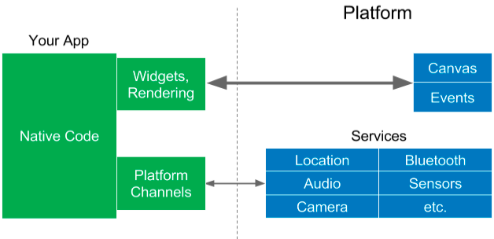
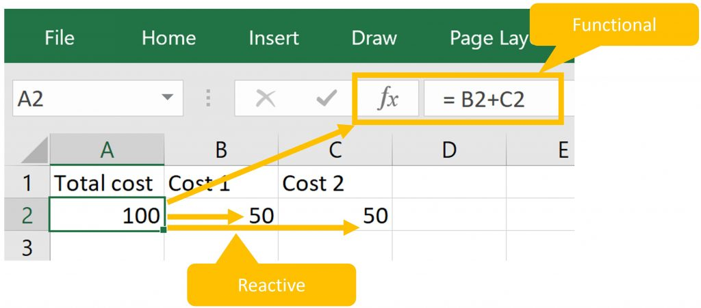
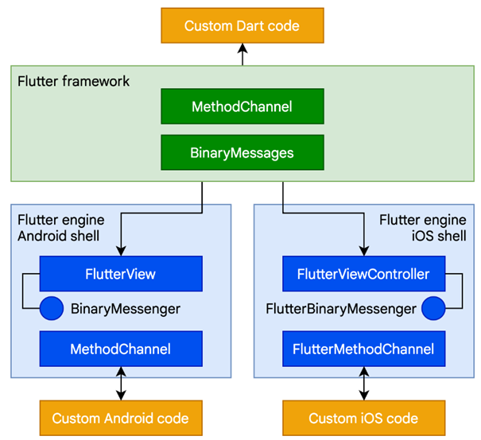
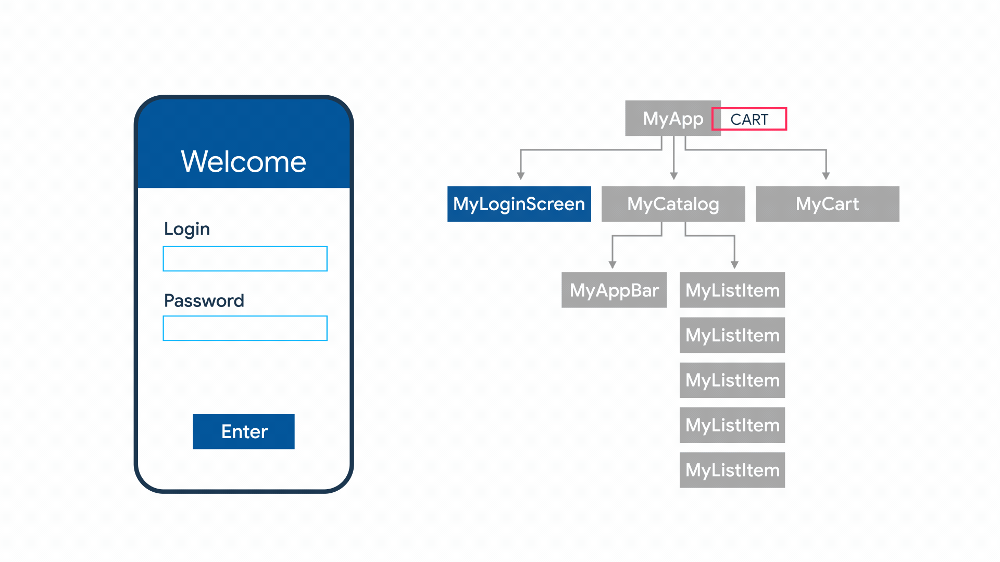

### Going mobile “This ‘telephone’ has too many shortcomings to be seriously considered as a means of communication. The device is inherently of no value to us.” - Western Union telegraph company memo, 1877 Jukka Nikki, Certified & Specialized :) - SUN Certified Web Component Developer (2003) - Full Stack Web Development Specialization (2017) - Android App Development Specialization (2017)
## 'Telephone' is still complex - limited: memory, disk, battery, screen size, .. - fragmented: new and old, premium and basic devices, many os versions, vendors, .. - connected: speed and data availability vary - secured: use of device capabilities only if user allows access, rights can be revoked at any point - sandboxed/realtime: process can be killed by os at any point if os needs resources
#### [Traditional way: Native development](https://github.com/devonfw-forge/devon4flutter-non-bloc-arch/wiki/110-Under-the-Hood) <img alt="native rendering" src="images/app-native-rendering.png" width="40%"> ["requires different teams, different code bases, different workflows, different tools, etc. Developers want an easier, better way to use a single codebase to build mobile apps for multiple target platforms, and they don’t want to sacrifice quality, control, or performance."](https://docs.flutter.dev/resources/faq#can-i-extend-and-customize-the-bundled-widgets)
#### apps vary in many dimensions - essential complexity: high / low / unknown - technical complexity: novel / high / some / low - connectivity: used offline / needs net / adaptive - networking: http / bluetooth / nfc / none - storage: local / network / autosync / realtime - information: strictly private / public / socially shared - locales / languages: one / many / global / RTL - users: few / many / communities / peak usage - user groups: casual / experts / admins
#### popular app development styles | Style | When to consider | | ------ | ------------ | | Web/Hybrid | Web app already exists, mobile app will be simple, we know how JS works ([been there, done that](https://en.wikipedia.org/wiki/Mere-exposure_effect)). | | Native | Only one platform required, tight platform integration needed, app is novel or technically complex. | | *platform | We need to support several platforms, our app isn't dead simple, we don't want to have team per platform. |
#### Technologies to use | Style | Languages | Environments | | ------ | --------------------- | ------------ | | Web/Hybrid | JS, ES, TS | PWA: Ng, Vue, React, Bridge: ReactNative, Webview: Cordova, Ionic, .. | | Native | Swift, Kotlin | Xcode, Android studio | | *platform | C#, Dart | Xamarin / .Net Maui, Flutter, Unity, .. |
#### [Disclaimer: Embedded WebView might not be for you](https://github.com/devonfw-forge/devon4flutter-non-bloc-arch/wiki/110-Under-the-Hood#embedded-webapp-approach) <img alt="embedded webview" src="images/app-webview-rendering.png" width="45%"> This was fancy at 2010s, but HTML + CSS might not work consistently and performant on every native WebView (legacy & ios alert!) and even [getting it secure might be tricky.](https://blog.ostorlab.co/webviews-security-android-ios.html)
#### [PWA: Progressive web apps](https://web.dev/what-are-pwas/) [Using progressive enhancement, new capabilities are enabled in modern browsers. (..) If the new capabilities aren't available, users still get the core experience.](https://web.dev/what-are-pwas/)
#### [PWA features: Safari](https://web.dev/what-are-pwas/) [WebKit Feature status](https://webkit.org/status/) : [Bluetooth => Not Considering](https://webkit.org/status/#specification-web-bluetooth)
#### As a mobile developer .. | Style | Reconsider & test & decide | | ------ | -----------------------------| | Web/Hybrid | I Love JS. Tip: Select PWA or JS bridge stack. Do Web/Hybrid MVPs as long as needed. Hope it works. | | Native | I know it's technically complex. Native seems only possibility. Tip: Ok, but still .. Do Multiplatform MVP. | | *platform | I value reuse. MVP showed it works for us. Tradeoffs are clear, native skills still needed in team. Tip: Fine to go. |
#### [Native development still common. Jetbrains 2021](https://www.jetbrains.com/lp/devecosystem-2021/miscellaneous/) <img alt="native devs" src="images/jetbrains-survey-native-use-2021.jpeg" width="45%"> <img alt="native platforms" src="images/jetbrains-survey-native-platform-development-2021.png" width="45%"> It's hard to say how much of native development could be replaced with multiplatform. It's possible that you needed native 3 years ago, but there's options now. Try it out.
#### [real numbers? real options? Jetbrains 2021](https://www.jetbrains.com/lp/devecosystem-2021/miscellaneous/) <img alt="multiplatform strongest" src="images/jetbrains-survey-cross-platform-use-2021.jpeg" width="40%"> ["Flutter .. has surpassed React Native to become the most popular cross-platform mobile framework. In 2019, it had a 30% share, and it now leads with a share of 42%."](https://www.jetbrains.com/lp/devecosystem-2021/miscellaneous/)
#### [Hear Professionals. StackOverflow 2022](https://survey.stackoverflow.co/2022/#section-most-popular-technologies-other-frameworks-and-libraries) <img alt="multiplatform strongest" src="images/professional_devs_flutter_2022.png" width="40%"> - Both platforms have engaged users - Professionals have not abandoned React Native - Flutter is ahead on headcount because of learners - Where are users of Flutter coming? Students? Fresh developers? From other platforms? Sideprojects?
#### [*platform trends, Statista 2021](https://www.statista.com/statistics/869224/worldwide-software-developer-working-hours/)
#### [Web trends, Statista 2022](https://www.statista.com/statistics/1124699/worldwide-developer-survey-most-used-frameworks-web/) [React](https://reactjs.org/) is strong with over 40% popularity. [Flutter is easy to learn for React and React Native programmers](https://docs.flutter.dev/get-started/flutter-for/react-native-devs) as these frameworks are all reactive, component based and do not use templates.
#### where React Native > Flutter - you want to build simple cross-platform apps on mobile and web with a single codebase. - you want to build apps using the native components on iOS and Android. - you’re already familiar with JavaScript and React.js, and you don’t want to learn a new language. [React native should be preferred if there's already front end skills present, and mobile is "nice to have" and not main platform.](https://blog.udemy.com/flutter-vs-react-native/)
#### React Native - [Hello World](https://docs.flutter.dev/get-started/flutter-for/react-native-devs) ``` import React from 'react'; import { StyleSheet, Text, View } from 'react-native'; export default class App extends React.Component { render() { return ( <View style={styles.container}> <Text>Hello world!</Text> // JSX is JS, but feels HTML </View> );}} const styles = StyleSheet.create({ // Smells like CSS container: {flex: 1, backgroundColor: '#fff', alignItems: 'center', justifyContent: 'center'}}); ``` HelloWorldApp class extends [React.Component](https://reactjs.org/docs/react-component.html) and implements the render method by returning a view component
#### where Flutter > React Native - your goal is a high-quality, mobile-first app from a single codebase. - UI should be custom, or contains complex animations and interactions. - Part of app requires use of native tools & code (ex. app has apple watch ui using swift ui) [Don’t use Flutter if you need a web-first experience, and mobile is not essential to your strategy.](https://blog.udemy.com/flutter-vs-react-native/)
#### Flutter - [Hello World](https://docs.flutter.dev/get-started/flutter-for/react-native-devs) ``` import 'package:flutter/material.dart'; void main() { runApp( /// UI is built with Dart code const Center( child: Text( 'Hello, world!', textDirection: TextDirection.ltr, ), ), ); } ``` The Center [widget](https://docs.flutter.dev/development/ui/widgets-intro) becomes the root of the widget tree and has one child, the [Text](https://docs.flutter.dev/development/ui/widgets/text) widget. Flutter UI is [composed](https://docs.flutter.dev/resources/architectural-overview#composition) in a flexible way from high amount of [simple single purpose widgets](https://docs.flutter.dev/resources/faq#can-i-extend-and-customize-the-bundled-widgets). It might look verbose, but it's precise and easy to understand.
#### [Architectures still differ](https://github.com/devonfw-forge/devon4flutter-non-bloc-arch/wiki/110-Under-the-Hood) <img alt="reactive rendering" src="images/app-reactive-rendering.png" width="45%">  ReactNative js app accesses platform widgets and services using bridge, which reduces performance, but is probably for most projects acceptable. Flutter app draws own ui components directly to canvas and integrates tightly with platform using method channels.
#### Some more *platform options? | Environment | Notes | | ------------ | ------ | | Xamarin | EOL 2024. ["support will end on May 1, 2024 for all Xamarin SDKs. "](https://dotnet.microsoft.com/en-us/platform/support/policy/xamarin) | | .NET MAUI | ["for creating mobile and desktop apps with C# and XAML."](https://github.com/dotnet/maui) | | Flutter | ["for mobile, web, and desktop from a single codebase."](https://github.com/flutter/flutter) | | Unity | For special cases only? ["create apps for Android, iOS, and Windows."](https://www.androidauthority.com/make-unity-apps-1073017/) |
## Xamarin => .NET MAUI [.NET MAUI 6 was published 23rd may 2022](https://devblogs.microsoft.com/dotnet/introducing-dotnet-maui-one-codebase-many-platforms/) - ["built on top of Xamarin.Forms"](https://www.syncfusion.com/blogs/post/xamarin-versus-net-maui.aspx) - ["just the beginning of our journey to create a desktop and mobile app experience that delights .NET developers."](https://devblogs.microsoft.com/dotnet/introducing-dotnet-maui-one-codebase-many-platforms/) - ["does not bring many new innovations to the cross-platform domain.](https://protovate.com/blog/tech-talk-flutter-3-vs-net-maui/) - [".NET MAUI is, at least in its current state, bit of a mess."](https://medium.com/pragmatic-programmers/google-flutter-vs-microsoft-net-maui-which-one-will-i-use-3015ec3f99a5)
#### .Net MAUI targets <img alt=".NET MAUI" src="images/maui.png" width="40%"> ["single shared project that can target Android, iOS, macOS, and Windows."](https://learn.microsoft.com/en-us/dotnet/maui/what-is-maui)
#### .Net MAUI architecture <img alt=".NET MAUI architecture" src="images/maui-architecture.png" width="50%"> ["you write code that primarily interacts with the .NET MAUI API (1). .NET MAUI then directly consumes the native platform APIs (3). In addition, app code may directly exercise platform APIs (2), if required."](https://learn.microsoft.com/en-us/dotnet/maui/what-is-maui)
## Flutter [Flutter 1.0 was published 04th dec 2018](https://developers.googleblog.com/2018/12/flutter-10-googles-portable-ui-toolkit.html) When flutter was fresh it got critic because of - low availability of experienced Dart programmers - compromised quality of some provided libraries - limited amount of libraries at it's core - Fast pace of change And then 2021 Flutter 2.0 introduced [sound null safety](https://dart.dev/null-safety), which broke whole ecosystem and [everyone was migrating at the same time](https://dart.dev/null-safety/migration-guide). Flutter 3.0 came out 2022.
#### [Flutter + Dart + Skia = ❤](https://medium.com/@georgetk1996/flutter-how-cross-platform-made-possible-47576976c5c1) Flutter has only 2 "legacy" components - [Skia](https://skia.org/) for rendering - [Dart](https://dart.dev/) for runtime [Skia](https://skia.org/), [Dart](https://dart.dev/) and Flutter are all developed by Google and closely related to Chrome.
#### [UI = f(state)](https://docs.flutter.dev/development/data-and-backend/state-mgmt/declarative) <img alt="flutter state mgmt" src="images/flutter-state-management.png" width="50%"> [Flutter is a reactive, pseudo-declarative UI framework](https://docs.flutter.dev/resources/architectural-overview). Developer provides a mapping from App state to UI state, and the framework updates UI at runtime when the App state changes. This model is inspired by [work that came from Facebook for their React framework](https://www.youtube.com/watch?v=x7cQ3mrcKaY&t=2s), which includes a rethinking of many traditional design principles.
#### [Functional Reactive Programming (FRP)](https://quickbirdstudios.com/blog/what-is-functional-reactive-programming-frp/) <img alt="flutter state mgmt" src="images/functional-reactive-programming.png" width="70%"> Reactive libraries or programming languages… - allow you to easily express data flows. - automatically evaluate your data flows and propagate data changes.
#### [Excel explains .. ](https://quickbirdstudios.com/blog/what-is-functional-reactive-programming-frp/)  functional and reactive programming - calculates stuff reliably (functional – same input, same output) - propagates changes through excel sheet (reactive – through defined data flows).
#### [Flutter element & render trees](https://docs.flutter.dev/resources/inside-flutter) <img alt="flutter ui tree" src="images/flutter-ui-trees-white.png" width="80%"> ["It would be a rare application that drew only a single widget. An important part of any UI framework is therefore the ability to efficiently lay out a hierarchy of widgets, determining the size and position of each element before they are rendered on the screen."](https://docs.flutter.dev/resources/architectural-overview#layout-and-rendering)
#### Compare: Reacts Virtual Dom <img alt="react virtual dom" src="images/raeact-virtual-dom.png" width="80%"> [DOM operations are expensive](https://medium.com/technogise/dom-manipulation-in-browser-59b793bee559). React renders only diff of initial and updated [Virtual DOMs](https://blog.logrocket.com/what-virtual-dom-react/).
<img alt="flutter arch" src="images/flutter-architecture.png" width="50%"> ["extensible, layered system exists as a series of independent libraries that each depend on the underlying layer .. every part of the framework level is designed to be optional and replaceable."](https://docs.flutter.dev/resources/architectural-overview)
#### [Platform adaptation](https://docs.flutter.dev/resources/platform-adaptations) | Type | Description | | ----------- | ------------ | | automatic | prevents ‘wrong’ behavior for given OS (ex. scrolling, text input) | | supported | provides tools to implement OS conventions (ex. tabs, alert dialog) | most widgets don't [adapt automatically](https://docs.google.com/document/d/14mxhVeVk1lClPkBi6VmB260_7fKUlZTM-Vn1bOres7M/edit), but developer can decide to use [cupertino](https://docs.flutter.dev/development/ui/widgets/cupertino) ([iOS style](https://developer.apple.com/design/human-interface-guidelines/platforms/designing-for-ios/)) or [material](https://docs.flutter.dev/development/ui/widgets/material) ([Googles Open source style system](https://m3.material.io/)) widgets.
#### missing pieces? Flutter, like [React](https://reactjs.org/), is library for building user interfaces - it's very focused single purpose solution without compromises - some [1st party plugins](https://github.com/flutter/plugins) from flutter team are included - use them or not (very short list) - plenty of [3rd party plugins](https://pub.dev/) are also present - best are [flutter favorites](https://docs.flutter.dev/development/packages-and-plugins/favorites) (very long list) - and nothing prevents you from implementing your [own plugins](https://docs.flutter.dev/development/packages-and-plugins/developing-packages) (ask yourself: is it worth sharing?)
<img alt="dart toolchain" src="images/dart-platforms.svg" width="60%"> ["During development .. apps run in a VM that offers stateful hot reload of changes without needing a full recompile. For release .. apps are compiled directly to machine code."](https://docs.flutter.dev/resources/architectural-overview)
#### [Dart](https://dart.dev/overview) - with C & [C#](https://www.toptal.com/dart/dartlang-guide-for-csharp-java-devs) & [JS](https://blog.codemagic.io/dart-vs-javascript/) & Java in Algol Family ``` import 'dart:math'; extension MyIterable on Iterable<int> { int get big => reduce(max); int get small => reduce(min); } void main() { var numbers = [25,42,13,40]; print('Solution is ${numbers.big}, not ${numbers.small}'); int? aNullableInt = null; print('Problem is $aNullableInt.'); } ``` Dart offers [sound null safety](https://dart.dev/null-safety) since 2.12, meaning that values can’t be null unless you say they can be. Extending classes is supported since Dart 2.7. Dart [Tiebo index = 35](https://www.tiobe.com/tiobe-index/) & [Github usage = 16](https://madnight.github.io/githut/#/pull_requests/2022/3). Try [DartPad](https://dartpad.dev/).
#### [Supported platforms](https://docs.flutter.dev/development/tools/sdk/release-notes/supported-platforms) | Environment | Versions | | ------------ | -------- | | Android | API 16 (Android 4.1) & above | | iOS | iOS 11 & above | | Linux | Debian, 64-bit | | macOS | El Capitan (10.11) & above | | Web | Chrome >= 84, Firefox >= 72.0, Safari on El Capitan & above, Edge >= 1.2.0 | | Windows | Windows 7 & above |
 [Flutter allows you to call into custom code through a platform channel, which is a mechanism for communicating between your Dart code and the platform-specific code of your host app.](https://docs.flutter.dev/resources/architectural-overview#platform-channels)
#### [C interop using dart:ffi](https://dart.dev/guides/libraries/c-interop) - use the [dart:ffi](https://api.dart.dev/stable/2.18.2/dart-ffi/dart-ffi-library.html) library to call native C APIs, and to read, write, allocate, and deallocate native memory. - use the [package:ffigen](https://pub.dev/packages/ffigen) binding generator to automatically create FFI wrappers from C header files. - how you bundle and load a C library depends on your platform and the type of library.
#### ["Architecture is about the important stuff. Whatever that is." - Ralph Johnson](https://martinfowler.com/architecture/) - Within the Flutter community, [State Management](https://docs.flutter.dev/development/data-and-backend/state-mgmt/intro) and [Architecture](https://martinfowler.com/architecture/) are often used synonymously - [Any architecture for a Flutter application](https://github.com/devonfw-forge/devon4flutter-non-bloc-arch/wiki/200-Architecting-a-Flutter-App#state-management-vs-architecture) will have [some sort of State Management](https://docs.flutter.dev/development/data-and-backend/state-mgmt/options) - [State Management](https://docs.flutter.dev/development/data-and-backend/state-mgmt/intro) is not an [architecture by itself](https://bloclibrary.dev/#/architecture), even if [bloc library](https://bloclibrary.dev/) documentation contains [architecture proposition]((https://bloclibrary.dev/#/architecture)). - Compare: [Redux](https://redux.js.org/), Reacts state management solution
#### [State management is useful](https://docs.flutter.dev/development/data-and-backend/state-mgmt/intro)  [when you need to share application state between screens, across your app](https://docs.flutter.dev/development/data-and-backend/state-mgmt/intro)
#### [Compare: Reacts Redux store](https://www.freecodecamp.org/news/what-is-redux-store-actions-reducers-explained/) <img alt="state management" src="images/redux-store-usage-sharing-data.png" width="80%"> The state of the whole application is stored in the form of a JS object tree in a single [store](https://redux.js.org/api/store).
#### [Bloc state management library](https://bloclibrary.dev/#/) <img alt="bloc arch" src="images/widget-bloc-communication.png" width="50%"> Theory: [Bloc](https://bloclibrary.dev/#/whybloc) separates [presentation](https://bloclibrary.dev/#/architecture?id=presentation-layer) from [business logic](https://bloclibrary.dev/#/architecture?id=business-logic-layer). Practice: Bloc is part of presentation layer. Each Bloc has one input (sink) and output ([stream](https://dart.dev/tutorials/language/streams)), but can emit (output) several types of states and handle (input) several types of events. [Naming things](https://bloclibrary.dev/#/blocnamingconventions) consistently is vital.
#### [Compare: Reacts Redux/Flux](https://redux.js.org/) <img alt="redux flux" src="images/redux-store-usage.png" width="50%"> Redux is a pattern and library for managing and updating application state, using events called "actions". Redux implements [Flux pattern](https://facebook.github.io/flux/docs/in-depth-overview/).
#### Compare: [Redux dataflow](https://redux.js.org/tutorials/essentials/part-1-overview-concepts) <img alt="redux flow" src="images/redux-dataflow-diagram.gif" width="60%"> The only way to update the state is to call store.dispatch() and pass in an action object.
#### Compare: [Counter reducer](https://redux.js.org/tutorials/fundamentals/part-1-overview) ``` // Create a "reducer" function that determines what the new state // should be when something happens in the app function counterReducer(state = initialState, action) { // Reducers usually look at the type of action that happened // to decide how to update the state switch (action.type) { case 'counter/incremented': return { ...state, value: state.value + 1 } // create copy default: // If the reducer doesn't care about this action type, // return the existing state unchanged return state } } ``` The store will run its reducer function and save the new state value. Reducers are [pure functions](https://www.geeksforgeeks.org/pure-functions-in-javascript/) that take the previous state and an action, and return the next state.
#### [Bloc architecture](https://bloclibrary.dev/#/architecture) <img alt="bloc architecture" src="images/bloc_architecture_full_white.png" width="60%"> Bloc attempts to make state changes predictable by regulating when a state change can occur and enforcing a single way to change state throughout an entire application.
#### [MVVM anywhere?](https://en.wikipedia.org/wiki/Model%E2%80%93view%E2%80%93viewmodel) <img alt="bloc mvvm comparison" src="images/mvvm_bloc.png" width="60%"> in "[MVVM (Model-View-ViewModel) pattern .. BLoC is the replacement for ViewModel](https://medium.com/@aaron.chu/flutter-state-management-bloc-pattern-9cd6011c699)." - [VM](https://developer.android.com/topic/libraries/architecture/viewmodel)(BLoC) is responsible for managing the state - [VM](https://developer.android.com/topic/libraries/architecture/viewmodel)(BLoC) uses Model (Repository) to access data Communication between V(UI) and [VM](https://developer.android.com/topic/libraries/architecture/viewmodel)(BLoC) has changed. [Stream](https://dart.dev/tutorials/language/streams) has replaced data binding.
#### [Example: Counter app](https://gist.github.com/felangel/fc8230776591f0297e6a1d1b5ef46a6c) <img alt="counter bloc app" src="images/counter_bloc_example_ui.png" width="80%"> "+" adds increment event to sink, counter is rendered when state is received from stream. [BlocProvider](https://pub.dev/documentation/flutter_bloc/latest/flutter_bloc/BlocProvider-class.html) controls lifecycle, [BlocBuilder](https://pub.dev/documentation/flutter_bloc/latest/flutter_bloc/BlocBuilder-class.html) rendering.
#### [Example: CounterBloc](https://gist.github.com/felangel/fc8230776591f0297e6a1d1b5ef46a6c) ``` /// Base event and Increment Event abstract class CounterEvent {} class Increment extends CounterEvent {} /// handles converting `CounterEvent`s into `int`s. class CounterBloc extends Bloc<CounterEvent, int> { /// The initial state of the `CounterBloc` is 0. CounterBloc() : super(0) { /// When `Increment` event is added, /// current `state` is accessed via the `state` property /// and a new state is emitted via `emit`. on<Increment>((event, emit) => emit(state + 1)); } } ``` [Bloc 7.2.0 provides on < event > () registration method.](https://verygood.ventures/blog/how-to-use-bloc-with-streams-and-concurrency) Blocs super constructor sets initial state, CounterBlocs constructor defines handling of "Increment" using single expression lambda.
#### [Example: CounterBlocTest](https://gist.github.com/felangel/fc8230776591f0297e6a1d1b5ef46a6c) ``` void main() { group('CounterBloc', () { test('initial state is 0', () { expect(CounterBloc().state, 0); }); blocTest<CounterBloc, int>( 'emits [1] when increment is called', build: CounterBloc.new, act: (bloc) => bloc.add(Increment()), expect: () => [1], ); }); } ``` [bloc_test](https://pub.dev/packages/bloc_test) allows testing reactive code in isolation. Mocking, setup, delays, etc. are supported but not needed in this example.
#### [Example: CounterApp](https://gist.github.com/felangel/fc8230776591f0297e6a1d1b5ef46a6c) ``` class CounterApp extends StatelessWidget { @override Widget build(BuildContext context) { return MaterialApp( home: BlocProvider( /// DI: always same bloc instance create: (_) => CounterBloc(), child: CounterPage(), ), ); } } void main() => runApp(CounterApp()); // Creation of app ``` [BlocProvider](https://pub.dev/documentation/flutter_bloc/latest/flutter_bloc/BlocProvider-class.html) takes care of creating single instance of [Bloc](https://pub.dev/documentation/bloc/latest/bloc/Bloc-class.html), lazily by default. Usage of [BlocProvider](https://pub.dev/documentation/flutter_bloc/latest/flutter_bloc/BlocProvider-class.html) loosely relates to Dependency Injection as concept.
#### [Example: CounterPage](https://gist.github.com/felangel/fc8230776591f0297e6a1d1b5ef46a6c) ``` class CounterPage extends StatelessWidget { @override Widget build(BuildContext context) { return Scaffold( appBar: AppBar(title: const Text('Bloc Counter')), body: Center( child: BlocBuilder<CounterBloc, int>( builder: (context, count) { return Text('$count', style: Theme.of(context).textTheme.headline1); },), ), floatingActionButton: FloatingActionButton( child: const Icon(Icons.add), onPressed:()=>context.read<CounterBloc>().add(Increment()), ),);}} ``` [BlocBuilder](https://pub.dev/documentation/flutter_bloc/latest/flutter_bloc/BlocBuilder-class.html) renders when state is read from stream. CounterBloc can be found with Context.read < blocType > and has [add](https://pub.dev/documentation/bloc/latest/bloc/Bloc/add.html) method which is sink for events.
#### Example: Widget Test ``` void main() { testWidgets('Counter++ test', (WidgetTester tester) async { await tester.pumpWidget(CounterApp()); // build, trigger frame expect(find.text('0'), findsOneWidget); expect(find.text('1'), findsNothing); await tester.tap(find.byIcon(Icons.add)); // tap '+' await tester.pump(); // trigger a frame expect(find.text('0'), findsNothing); expect(find.text('1'), findsOneWidget); }); } ``` [widget testing](https://docs.flutter.dev/cookbook/testing/widget/introduction) allows initiating actions and testing ui components state changes frame by frame.
<img alt="bloc as part of arch" src="images/flutter-bloc-architecture-layers.png" width="70%"> [layers](https://github.com/devonfw-forge/devon4flutter-non-bloc-arch/wiki/220-BLoC)
<img alt="multimodule monorepo arch" src="images/multimodule_repo_example.png" width="80%"> [layers and packages](https://github.com/devonfw-forge/devon4flutter-non-bloc-arch/wiki/220-BLoC)
<img alt="lib and packages" src="images/app_lib_packages_structure.png" width="30%"> <img alt="single feature" src="images/lib_feature_structure.png" width="30%"> lib:features, packages:domain/repository, data/client
#### [summary of organizing principles](https://verygood.ventures/blog/very-good-flutter-architecture) lib contains presentation - features match to functional requirements - found from software design and named clearly packages contains domain and data - domain consists of repositories - repositories transform raw data to apps domain - data consists of clients - clients are built to be reusable
## Flutter Recap - [React](https://reactjs.org/)/[ReactNative](https://reactnative.dev/) have similarities to Flutter - Flutter UI is [reactive](https://docs.flutter.dev/resources/inside-flutter) and [declarative](https://docs.flutter.dev/get-started/flutter-for/declarative) - [UI's are composed](https://docs.flutter.dev/development/ui/layout) - [widgets](https://docs.flutter.dev/development/ui/widgets-intro) everywhere! - Dart is [typed](https://dart.dev/guides/language/type-system), [null safe](https://dart.dev/null-safety), [top 20](https://redmonk.com/sogrady/2022/10/20/language-rankings-6-22/) language - Dart enables [hot reload](https://docs.flutter.dev/development/tools/hot-reload), [JIT](https://dart.dev/tools/dart-compile) and [AOT](https://dart.dev/tools/dart-compile) - Usage of [native / foreign code](https://docs.flutter.dev/development/platform-integration/platform-channels) is supported - Architecture != State Management, you need both - [Bloc](https://bloclibrary.dev/#/) is popular [state management option](https://docs.flutter.dev/development/data-and-backend/state-mgmt/options) - Bloc works as [VM](https://developer.android.com/topic/libraries/architecture/viewmodel) at [Model-View-ViewModel](https://en.wikipedia.org/wiki/Model%E2%80%93view%E2%80%93viewmodel) - Starting with [MVP](https://en.wikipedia.org/wiki/Minimum_viable_product) is good decision
#### Design: [Simple](https://www.infoq.com/presentations/Simple-Made-Easy/) over [complex](https://www.infoworld.com/article/3639050/complexity-is-killing-software-developers.html) [.. value the items on the left more](https://agilemanifesto.org/) - Types: Static/Safe over Dynamic/Nullable - State: Immutable over Mutable - Presentation: Code over Templates - Rendering: Reactive/Declarative over Imperative - Components: Composition over Inheritance - Libraries: Focused/Small over Multipurpose - Structure: Modular/Layered over Unstructured - Programming: Generation over Coding
#### History / Presentations - [React: rethinking best practices, 10/2013](https://www.youtube.com/watch?v=x7cQ3mrcKaYx) - [Open the Sky, 23.10.2014](https://github.com/flutter/flutter/commit/00882d626a478a3ce391b736234a768b762c853a) - [Sky Engine Demo, 4/2015](https://www.youtube.com/watch?v=PnIWl33YMwA) - [The Mahogany Staircase - Flutter's Layered Design, 3/2016](https://www.youtube.com/watch?v=dkyY9WCGMi0) - [Flutter: Dart Developer Summit 2016, 10/2016](https://www.youtube.com/watch?v=Mx-AllVZ1VY) - [Flutter: The Best Way to Build for Mobile?, 10/2017](https://www.youtube.com/watch?v=1BXg4wfB9pA) - [Early Success Story, 2018](https://medium.com/kinandcartacreated/flutter-the-skys-the-limit-84887c8f650d)
## More - [State of Flutter & Dart](https://redmonk.com/jgovernor/2022/05/16/flutter-propels-dart-frameworks-language-adoption-and-cross-platform-development/) - [Flutter & Ubuntu](https://ubuntu.com/blog/flutter-and-ubuntu-so-far) - [Awesome Flutter](https://github.com/Solido/awesome-flutter) - [Riverpod and Bloc comparison](https://otakoyi.software/blog/riverpod-and-bloc-packages-comparison) - [Crossing the chasm](https://www.hightechstrategies.com/crossing-the-chasm-summary/)
## Examples - [wisgen, 2019, no null safety used](https://github.com/Fasust/wisgen) - [i/o Pinball, 2022](https://verygood.ventures/success-stories/i-o-pinball) - [ranch game, 2022](https://verygood.ventures/blog/very-good-ranch-game)
#### Tradeoffs / Fears / .. - ✗ [Additional layer on top of native adds complexity](https://betterprogramming.pub/why-flutter-isnt-the-next-big-thing-e268488521f4) - ✗ ReactNative and Native development will win - ✗ Googles [pet sematery](https://killedbygoogle.com/) waiting? - ✓ [Google has a clear financial incentive to invest in adoption of a cross platform language](https://redmonk.com/jgovernor/2022/05/16/flutter-propels-dart-frameworks-language-adoption-and-cross-platform-development/)
## DX: Nulls Mentioned native and multiplatform languages are statically typed with native null safety support - C# (Xamarin, .net MAUI, Unity) - Dart (Flutter) - Kotlin (Android Native) - Swift (iOS Native) https://en.wikipedia.org/wiki/Nullable_type Duck typing is kinda not static and not very safe. JS & ES & TS can be used in evil ways. With power comes responsibility.
#### [Sources: by layer/type+domain](https://github.com/devonfw-forge/devon4flutter-non-bloc-arch/wiki/400-Conventions) ``` lib | ├── blocs ├── data ├── models ├── repositories ├── ui | ├── pages | | ├── home_page.dart | | └── ... | └── widgets | ├── image_card.dart | └── ... └── main.dart ``` Stick to one way of organizing files: [by feature/type](https://medium.com/flutter-community/scalable-folder-structure-for-flutter-applications-183746bdc320) is viable option if features can be clearly defined
#### [S-curve](https://sketchplanations.com/the-s-curve): Native -> *Platform - Experts of current game know rules and limitations - Changing game is not easy and contains risks
#### [Chasm](https://sketchplanations.com/understanding-the-chasm): Change -> Productivity <img alt="chasm" src="images/chasm.png" width="60%"> - Visionaries thrive for change and tolerate difficulties - Pragmatists follow if it is proven to work for them